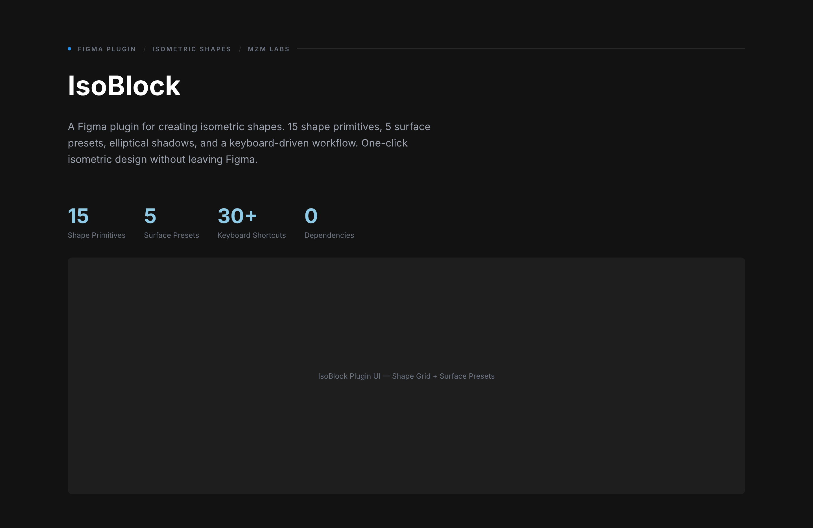
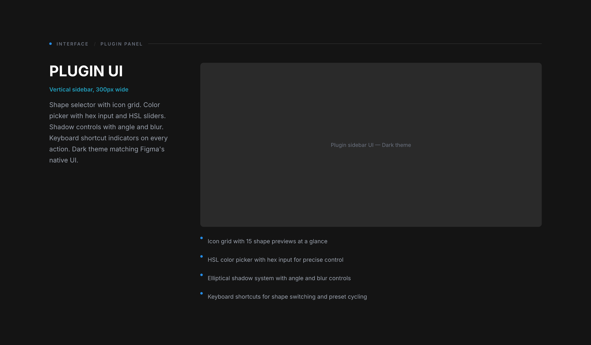

A Figma plugin for creating isometric shapes. 15 shape primitives, 5 surface presets, elliptical shadows, and a keyboard-driven workflow. One-click isometric design without leaving Figma.

Creating isometric shapes in Figma means manual rotation, skewing, and alignment for every single element. Designers resort to importing pre-made SVGs or spending hours on geometric calculations. There was no native way to create, customize, and iterate on isometric designs directly in Figma.
IsoBlock turns isometric design from a math problem into a creative tool.
15 shapes organized in three categories. Basic primitives for everyday use, structural shapes for architecture and diagrams, and diagram shapes for flowcharts and presentations. Each rendered with the three-tone isometric color system.
Five rendering styles applied to any shape. Each preset controls how light interacts with the three isometric faces, creating distinct visual treatments from a single shape.
Shape selector with icon grid. Color picker with hex input and HSL sliders. Shadow controls with angle and blur. Keyboard shortcut indicators on every action. Dark theme matching Figma's native UI.
